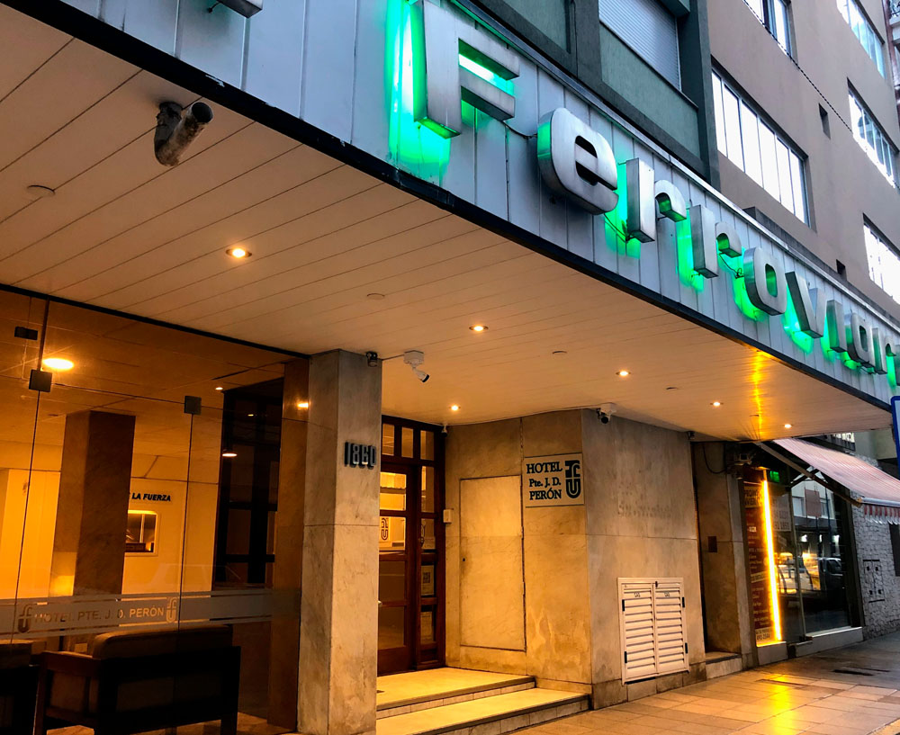
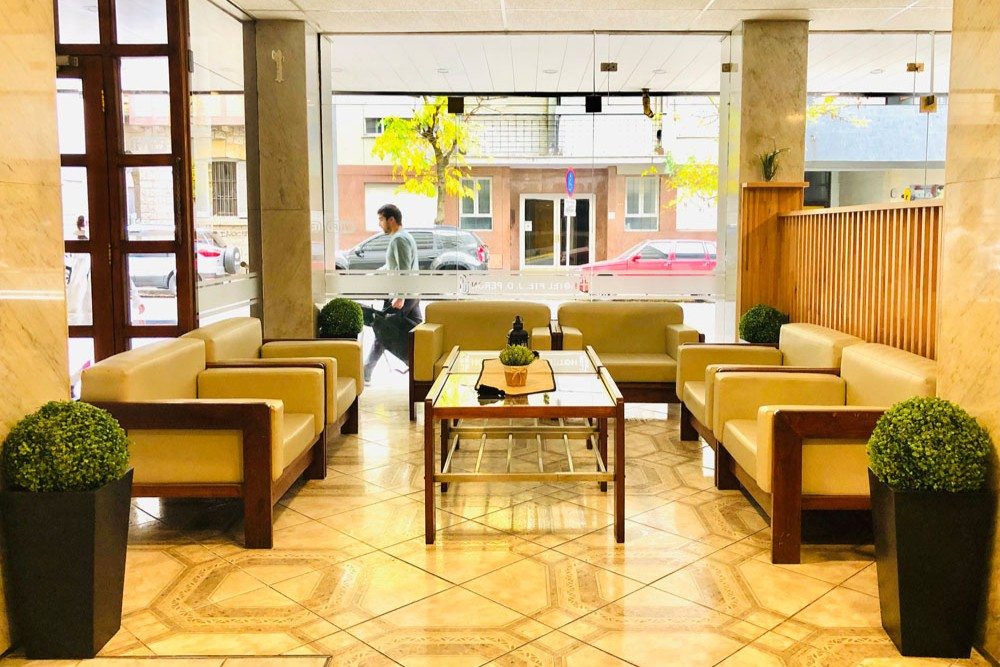
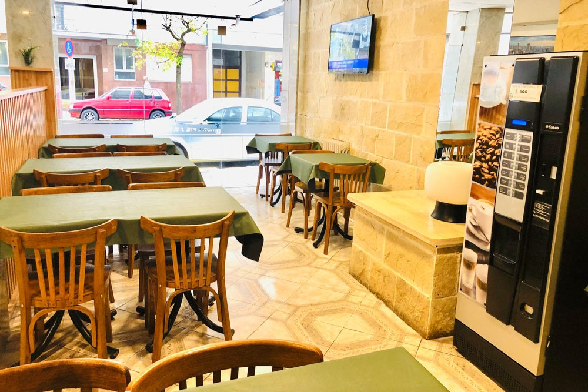
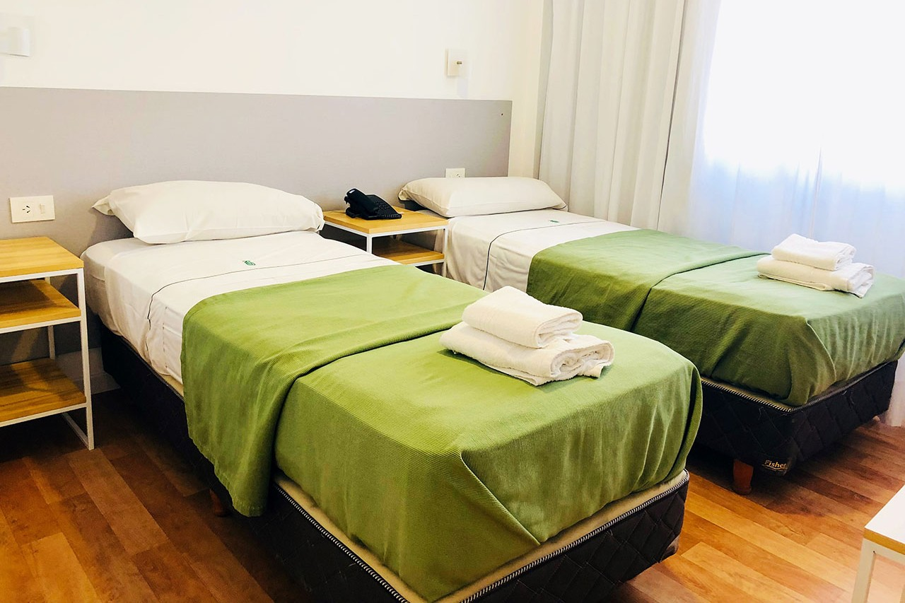

Hotel Juan D. Perón
Mar del Plata, Buenos Aires · Unión Ferroviaria
Conocé el hotel




Sobre el hotel
El Hotel Juan Domingo Perón se encuentra en Mar del Plata, a aproximadamente 200 metros de Playa Bristol y a 600 metros del Torreón del Monje y de la calle Güemes.
Instalaciones y servicios
- Habitaciones estándar: individuales, dobles y triples.
- Suites Junior: cuádruples, quíntuples y séxtuples.
- Wi-Fi gratuito en áreas comunes.
- Servicio de limpieza.
Comodidades
- Desayuno continental incluido.
- Calefacción central.
Horarios
- Ingreso: a partir de las 15:00.
- Salida: hasta las 10:00.
Ubicación
Almirante Brown 1860, Mar del Plata, Buenos Aires.
Requisitos y documentación
- Estar adherido al Plan de Acción Social (P.A.S.).
- DNI del titular (frente y dorso).
- Último recibo de haberes.
- DNI de los acompañantes (frente y dorso).